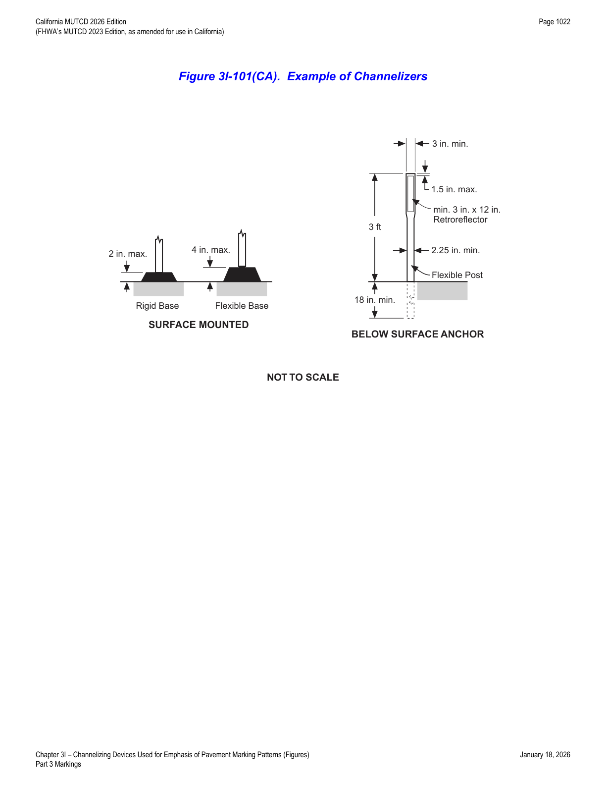
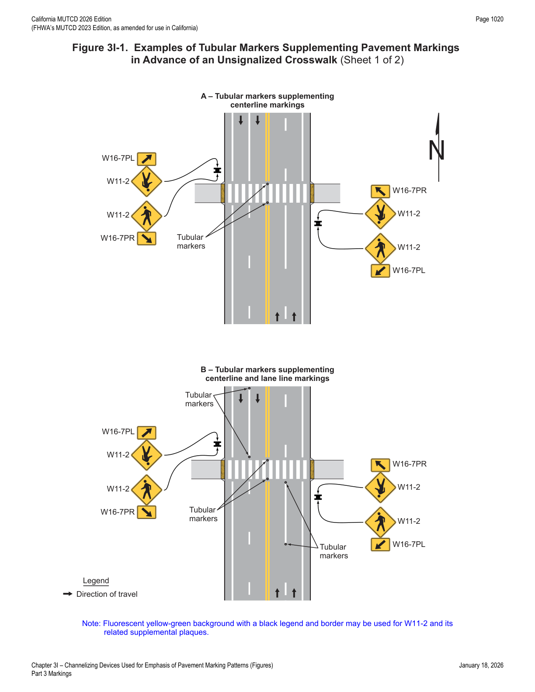
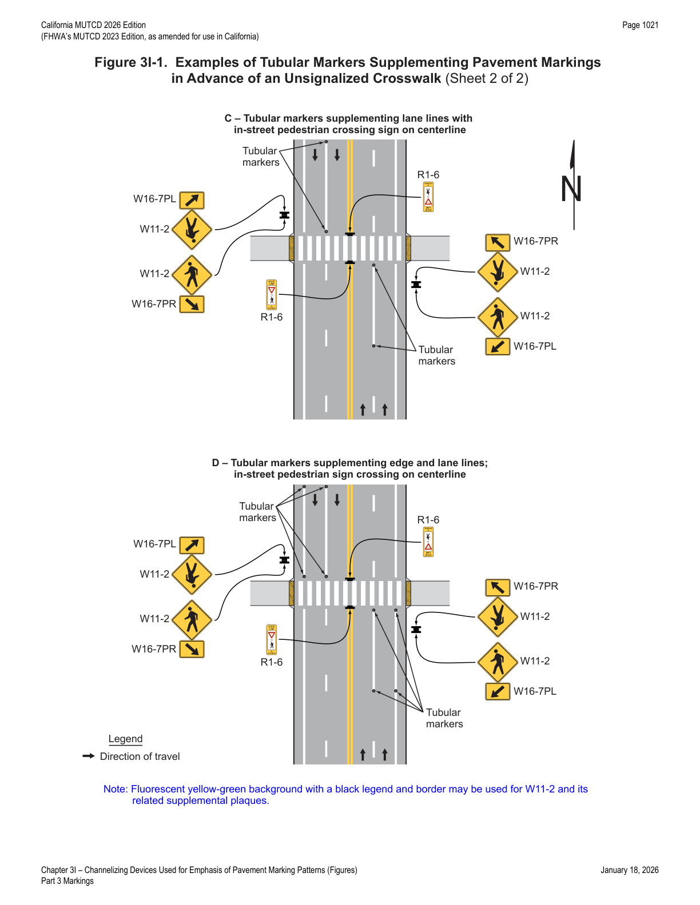

Part 3 · Markings · Chapter 3I
Channelizing Devices Used for Emphasis of Pavement Marking Patterns
Requirements for using channelizers, tubular markers, and other channelizing devices to add physical emphasis to pavement markings — including channelizer design and spacing, and tubular marker placement in advance of unsignalized crosswalks.
3I.01Channelizing Devices
- 01Channelizing devices (see Sections 6K.01 through 6K.07 and Figure 6K-1) such as cones, tubular markers, vertical panels, lane separators, drums, and barricades may be used for general traffic control purposes such as adding emphasis to reversible lane delineation, channelizing lines, islands, pedestrian facilities, or bicycle facilities. Channelizing devices may also be used along a center line to preclude turns or along lane lines to preclude lane changing, as determined by engineering judgment.
- 01aIn California, cones and drums are used for temporary traffic control, not as permanent channelizing devices.
- 02Although they are not considered to be traffic control devices, raised islands (see Chapter 3J) are also sometimes used to channelize traffic.
- 03Except for color, the design of channelizing devices, including, but not limited to, retroreflectivity, minimum dimensions, and mounting height, shall comply with the provisions of Chapter 6K.
- 04Except as provided in Paragraph 5 of this Section, the color of channelizing devices used outside of temporary traffic control zones shall be the same color as the pavement marking that they supplement, or for which they are substituted, in accordance with Section 3A.03.
- 05The color of channelizing devices used to emphasize pavement marking patterns outside of temporary traffic control zones may be orange, provided that the application of the orange-colored channelizing device is not permanent.
- 06Emergency incidents and planned special events are the most common temporary traffic control zones that would justify orange channelizing devices to emphasize standard pavement marking colors. These events do not necessitate police officers or other authorized personnel to obtain and deploy channelizing devices that match the color of the existing pavement marking.
- 07For nighttime use, channelizing devices shall be retroreflective (as described in Part 6) or internally illuminated. On channelizing devices used outside of temporary traffic control zones, retroreflective sheeting or bands shall be white if the devices separate traffic flows in the same direction and shall be yellow if the devices separate traffic flows in the opposite direction or are placed along the left-hand edge line of a one-way roadway or ramp.
- 08Channelizers are flexible retroreflective devices for installation within the roadway to discourage road users from crossing a line or area of the roadway. Unlike delineators, which indicate the roadway alignment, channelizers are intended to provide additional guidance and/or restriction to traffic by supplementing pavement markings and delineation.
- 09Channelizers may be used for additional emphasis to discourage median crossings at traffic islands and at lane separations.
- 10The design of a channelizer shall be as shown in Figure 3I-101(CA).
- 11The retroreflective unit used on channelizers shall be a minimum of 3 x 12 inches. The 3 x 24 inch minimum retroreflective unit shall be visible at 1000 feet at night under illumination of legal high beam headlights, by persons with vision of or corrected to 20/20.
- 12The post shall be flexible with a 2¼ inch minimum width, except that the portion containing the retroreflective unit shall be a minimum width of 3 inches. The post shall be a minimum height of 36 inches above the pavement.
- 13Channelizer posts used for temporary traffic control shall be orange with white reflectors. Refer to Section 6H.101(CA).
- 14At locations where speeds are 40 mph or less, a minimum post height of 28 inches may be used.
- 15Since channelizers require closer spacing, their post size requirements differ from those of delineators.
- 16There are two basic types of channelizers: one attaches to the pavement and the other attaches to an anchoring device imbedded in the pavement. Both the base and anchor systems are designed to permit replacement of the channelizer post. Refer to Figure 3I-101(CA).
- 17Channelizers should be placed a minimum of 2 feet from the traffic line, away from traffic, to allow for future maintenance of the line.
- 18Space limitations may dictate exceptions to this criterion. At certain locations, placement directly on the traffic line may be required.
- 19Spacing of the channelizers depends on the type of facility where they are to be used, the speed and volume of traffic, and the alignment to be channelized. Spacing which results in a visual fence/barrier effect is a key factor in channelizer installation.
- 20The maximum post spacing should be 100 feet on carpool lanes where channelizers are used primarily to delineate the separation between the carpool lane and the main facility.
- 21In locations where a relatively high number of violations occur, the post spacing should be 25 feet.
- 22Where barrier violations are relatively minimal, a post spacing of 50 feet may be adequate. However, spacing in excess of 50 feet is of negligible value as a deterrent to intentional barrier violations.
- 23Post spacing closer than 25 feet may be considered on lower speed roads, urban streets, and at specific locations such as traffic islands.

In practice: the 25-foot spacing for high-violation locations versus the 50-foot cap for low-violation locations (with anything beyond 50 feet considered a negligible deterrent) is the key number engineers cite when specifying channelizer spacing on carpool lane buffers and islands.
3I.02Tubular Markers
- 01Tubular markers for permanent installations shall be a minimum of 28 inches in height and shall be a minimum of 2 inches wide facing road users.
- 02Tubular markers should be affixed to the pavement or other surface either directly or by means of an attachment system that is affixed to the pavement or other surface. Tubular markers should normally be spaced no greater than N as cited in Section 3B.14.
- 03Other spacing may be used based on engineering judgment.
- 04Tubular markers are sometimes used to provide additional emphasis or improve lane discipline in advance of an unsignalized crosswalk (see Figure 3I-1).
- 05When tubular markers are used to supplement a R1-6 series sign (see Section 2B.20) that is either on the center line, lane line, or median island, they should not be used on the same pavement marking line where the R1-6 series sign is installed.
- 06Section 6K.04 contains information for temporary installations of tubular markers.


Note in the source figures: a fluorescent yellow-green background with black legend and border may be used for the W11-2 sign and its related supplemental plaques (W16-7PL/W16-7PR).
★ Key Takeaways — Chapter 3I
- Except for color, channelizing devices used to emphasize pavement markings must otherwise comply with Chapter 6K (retroreflectivity, minimum dimensions, mounting height); their color must match the pavement marking they supplement or substitute for (white for same-direction separation, yellow for opposing-direction separation or left edge of a one-way roadway/ramp), except orange may be used temporarily outside TTC zones for emergencies/planned special events.
- Channelizer design per Figure 3I-101(CA): retroreflective unit minimum 3 x 12 inches (visible at 1000 ft at night under high beams to 20/20 vision), post flexible with 2¼ inch minimum width (3 inch minimum at the retroreflective unit), minimum height 36 inches above pavement (28 inches permitted where speeds are 40 mph or less).
- Channelizer placement: minimum 2 ft offset from the traffic line; spacing guidance is 100 ft max on carpool lane buffers, 25 ft at high-violation locations, up to 50 ft where violations are minimal (spacing beyond 50 ft has negligible deterrent value), and closer than 25 ft may be used on lower-speed roads, urban streets, and traffic islands.
- In California, cones and drums are treated strictly as temporary traffic control devices, not permanent channelizing devices.
- Tubular markers for permanent installation must be a minimum of 28 inches tall and 2 inches wide facing road users, spaced per Section 3B.14, and commonly supplement centerline/lane line/edge line markings in advance of unsignalized crosswalks alongside W11-2 pedestrian warning signs and R1-6 in-street signs — but should not share the same marking line as an installed R1-6 series sign.